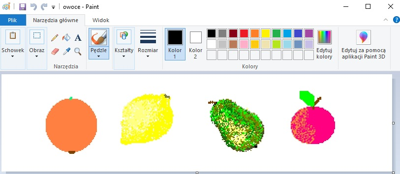
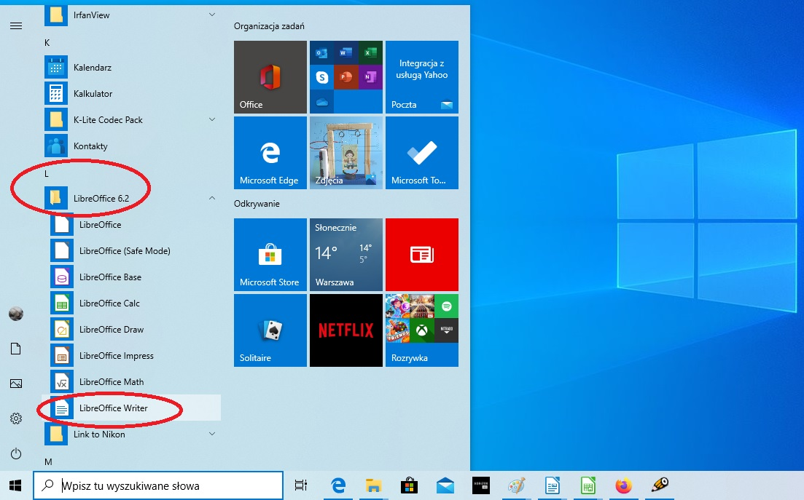
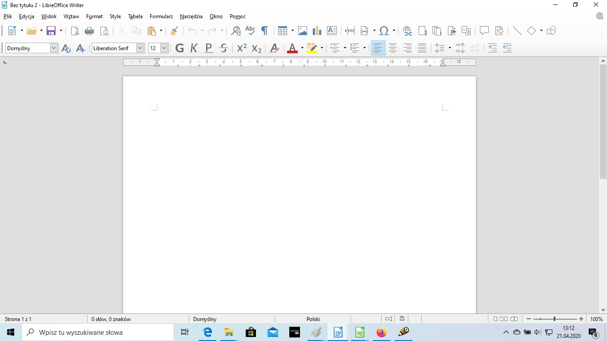
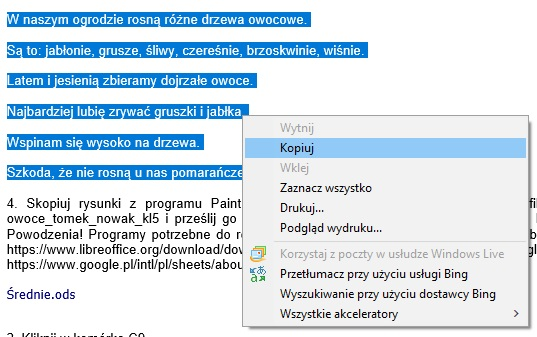
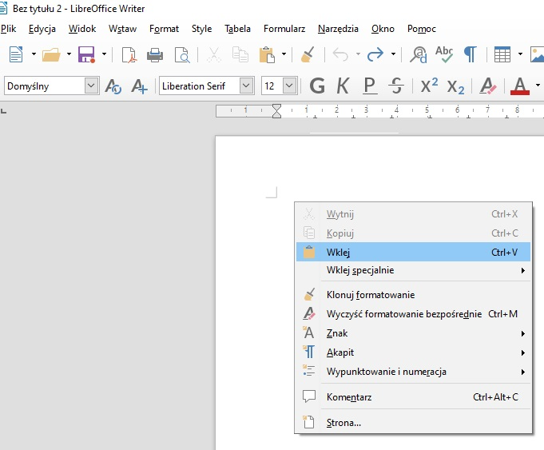
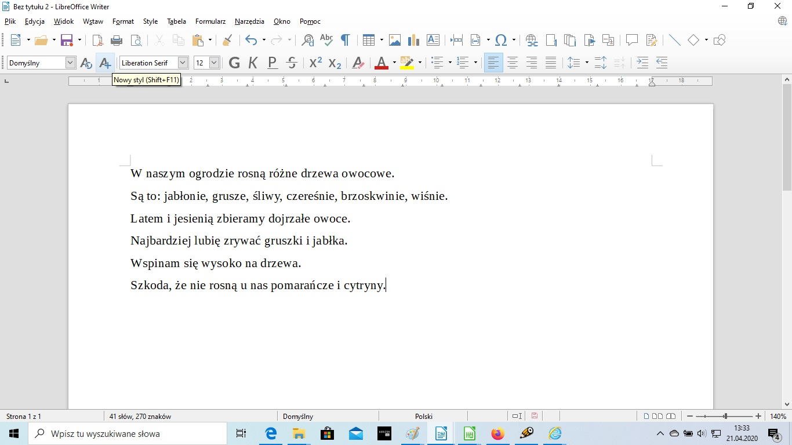
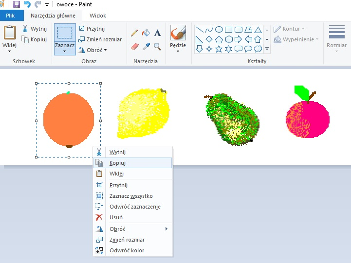
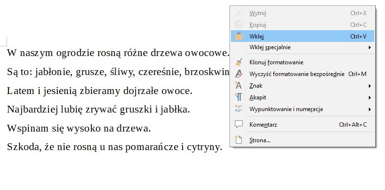
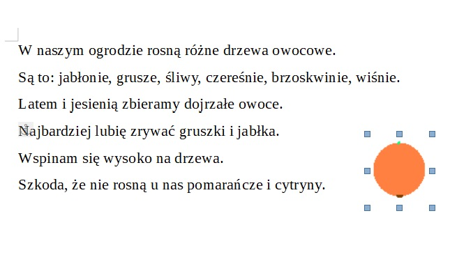
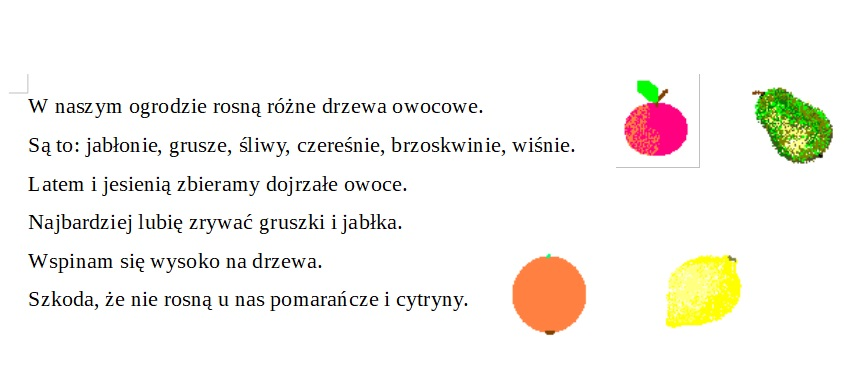

Ćwiczenia krok po kroku
Informatyka
Temat: Wklejanie rysunku do tekstu cd.
1. Obejrzyj filmik
https://www.youtube.com/watch?v=FK8Wed3n84c&list=PLUVYkJRYU4wJPGCQ97TlU9M7b-l36iMQg&index=2&t=0s
2. Otwórz program Paint i narysuj 4 owoce: jabłko, gruszkę, śliwkę i cytrynę.

3. Otwórz program LibreOffice Writer.


4. Skopiuj poniższy tekst ...

skopiuj tekst:
W naszym ogrodzie rosną różne drzewa owocowe.
Są to: jabłonie, grusze, śliwy, czereśnie, brzoskwinie, wiśnie.
Latem i jesienią zbieramy dojrzałe owoce.
Najbardziej lubię zrywać gruszki i jabłka.
Wspinam się wysoko na drzewa.
Szkoda, że nie rosną u nas pomarańcze i cytryny.
i wklej go do otwartego dokumentu LibreOffice Writer


4. Skopiuj rysunki z programu Paint i wklej do tekstu tak jak pokazano to na filmie.



5. Skopiuj i wklej pozostałe owoce

6. Zapisz dokument tekstowy jako np: owoce_tomek_nowak_kl7 i prześlij go w załączniku na adres: jakrzemian@gmail.com
Powodzenia!
Programy potrzebne do realizacji tematu (do wyboru):
LibreOffice (do pobrania bezpłatnie w ramach pakietu LibreOffice)
https://www.libreoffice.org/download/download/
lub Dokumenty Google (wersja online bezpłatnie)
https://www.google.pl/intl/pl/sheets/about/